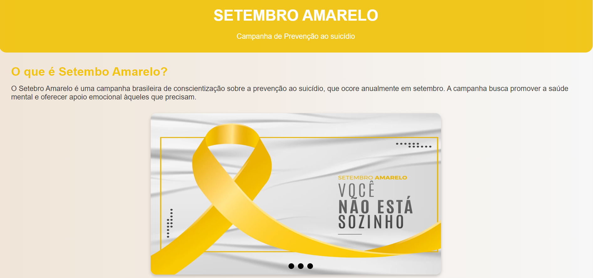
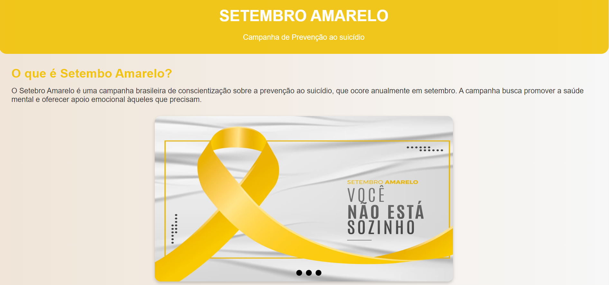
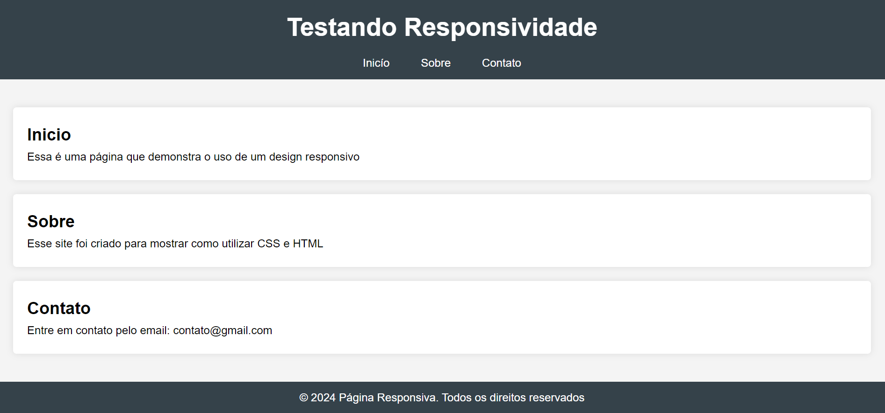
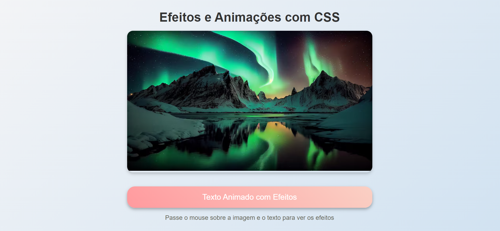

Projeto 1
Nesse projeto aproveitamos o tema do Setembro Amarelo para criarmos um site treinando a estilização de páginas, animações, etc.
Sou um programador de 17 anos em formação no curso de Desenvolvimento de Sistemas do SENAI de Sumaré. Apaixonado por tecnologia, busco constantemente aprender novas linguagens e ferramentas. Gosto de enfrentar desafios e transformar ideias em soluções digitais.
Nesse projeto aproveitamos o tema do Setembro Amarelo para criarmos um site treinando a estilização de páginas, animações, etc.
Nesse projeto, focamos principalmente no treinamento de Media Queries, possuindo uma parte de HTML mais simples.
Esse foi meu pimeiro projeto em relação ao CSS, para iniciarmos testamos principalmente as animações e a mudança de fontes e cores.
